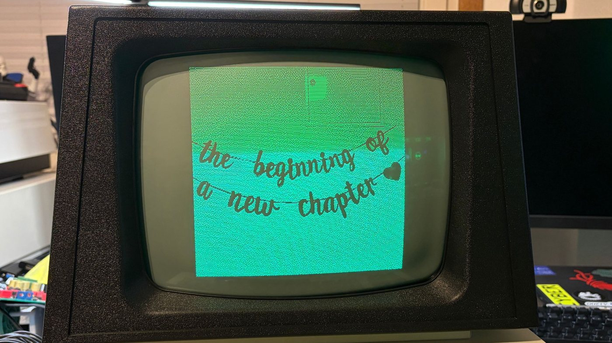
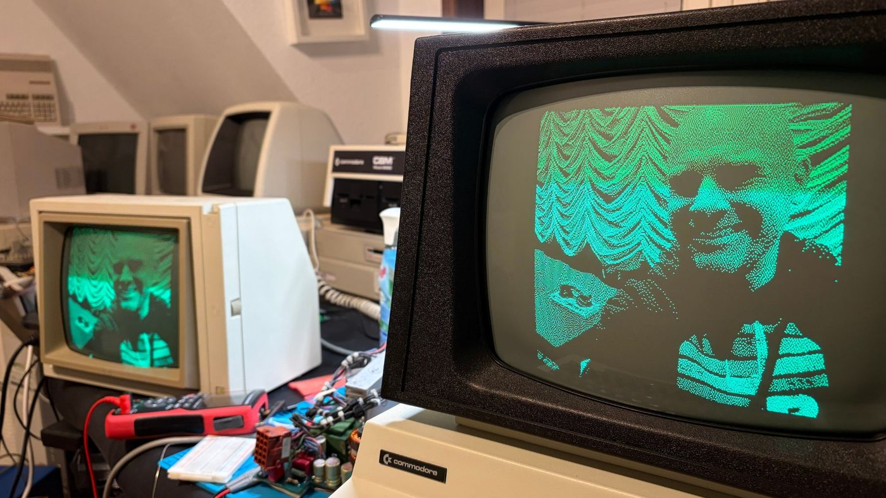
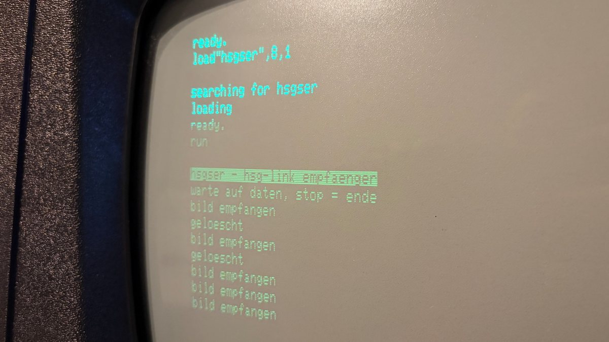
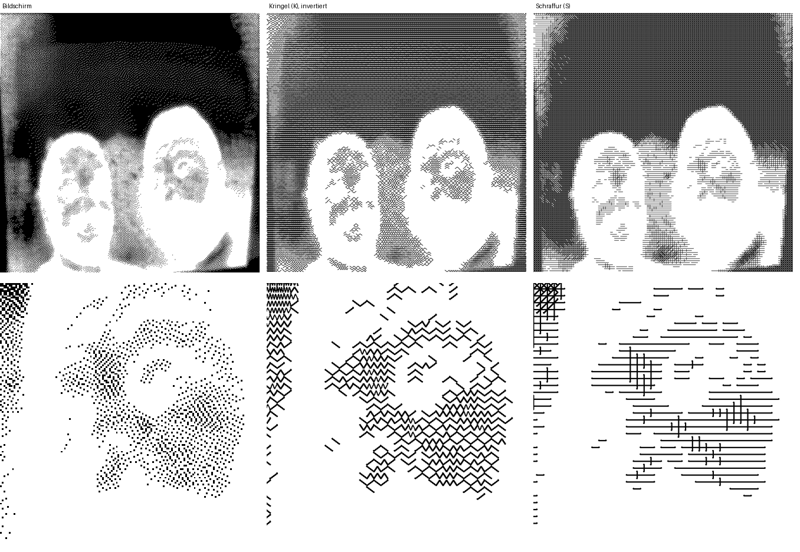
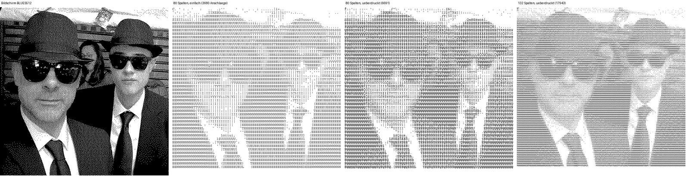

Commodore CBM 8032 / 4032 · HSG/LSG board (EF9365 / EF9366)
CBM-HSG-Konverter
Photos on the HSG screen, live from the PC, on the HP plotter
and on the CBM 8028 daisy-wheel printer – the complete guide
1 · StandalonePrepare the image on the PC, put it on disk, load it on the CBM
2 · SerialLive images from the PC via USB and the userport (HSG-Link)
3 · PlottingThe displayed image as hatching on an HP plotter
4 · PrintingText graphics on the CBM 8028 daisy-wheel printer
1 · Overview
2 · What you need
3 · First steps on the CBM
4 · The HTML converter
5 · Use case 1: Standalone on the CBM
6 · Use case 2: Serial (HSG-Link)
7 · Use case 3: Plotting
8 · Use case 4: Printing on the 8028
9 · HSGMENU: all keys
10 · Troubleshooting
11 · Appendix
As of 20 Nov 2026. This guide covers everything. For building the HSG-Link cable there is also the detailed HSG-Link guide (HSG-Link-Anleitung.pdf, German) with soldering plan. The converter's user interface and the messages on the CBM are in German; this guide quotes them in the original with an English translation.
1 · Overview
The HSG board („Hochauflösende Grafik“, high-resolution graphics by Commodore Germany, rebuilt as LSG) shows 512 × 256 pixels (EF9366) or 512 × 512 pixels (EF9365) in black and white. This project brings any photo onto this board and from there onto paper.
How it started
It all began with the Low-Speed-Graphik (LSG) by InsaneDruid, a 100 % compatible replica of Commodore's HSG card for the CBM 8032, 4016 and 4032 (github.com/InsaneDruid/Low-Speed-Graphik, CC BY-SA 4.0). It was built with help from the VzEkC forum community. The card came with two small programs:
bmp2hsg.py by InsaneDruid (Python, 2024, CC0), the original converter. It turns a finished black-and-white BMP of 512 × 256 or 512 × 512 pixels into a loadable HSG file.- The HSG Image Loader (HSGIMAGE) by AndyG (July 2024). It displays such a file on the CBM.
Step by step this grew into the present project:
- An HTML converter that prepares any photo directly in the browser.
- HSG-Link for live transfer via the userport.
- HSGMENU with plotter output.
- Last, the text graphics for the CBM 8028 daisy-wheel printer.
The building blocks
| Part | What it does | Where |
|---|
HTML converter hsg-converter.html | Prepares images (crop, tones, dithering), preview, assembles D64 disks, sends images via HSG-Link, plot and print preview | PC, browser |
| HSGMENU | Main program on the CBM: menu with „1 = image from disk“ and „2 = HSG-Link“, plotting in both cases | CBM |
| HSGIMAGE | Original loader by AndyG: show an image from disk | CBM |
| HSGSER | Plain HSG-Link receiver without plotter | CBM |
| HSGPLOT, DIREKTPLOT | Single programs (HSG-Link + plotter, disk + plotter), same functions as HSGMENU | CBM |
| DRUCK8028 | Sends a text graphics file to the daisy-wheel printer | CBM |
| HSG-Link | Arduino Pro Micro + cable: USB from the PC to the CBM's userport | hardware |
Which way for which purpose?
| You want to … | Way | Chapter |
|---|
| prepare images and show them on the CBM without a PC connection | HTML converter → D64 → drive → HSGMENU, key 1 | 5 |
| show images directly from the PC, try crop and brightness live | HTML converter → HSG-Link → HSGMENU, key 2 | 6 |
| draw the image on paper | as 1 or 2, then key S, K or P/H | 7 |
| print the image as text graphics | HTML converter (output „Drucker 8028“) → D64 → DRUCK8028 | 8 |

Left the image on the HSG screen, centre as zigzag plot, right as hatching plot (simulation).
2 · What you need
Always
- CBM 8032 or 4032 with BASIC 4 and 32 KB RAM. The hatching mode uses memory up to
$5FFF.
- HSG or LSG board with EF9365 (version A, 512 × 512, flickers without a long-persistence monitor) or EF9366 (version B, 512 × 256, flicker-free).
- A drive on the IEEE-488 bus, e.g. an SD drive such as petSD+ or CBM-D9096 (D64 files straight from the SD card) or a real floppy such as 8050/8250 (transfer the D64 to a disk first).
- A PC with Chrome or Edge. The HTML converter is a single file and works without internet.
Depending on the use case
| For | Part | Note |
|---|
| HSG-Link | Arduino Pro Micro 5 V / 16 MHz (ATmega32U4), 10 × 470 Ω resistor, userport edge connector 2 × 12 contacts (3.96 mm pitch, like the C64 userport), wires | Build guide: HSG-Link-Anleitung.pdf |
| Plotting | HP plotter with HP-GL and IEEE-488 (HP-IB), e.g. HP 7470A or 7475A | factory address usually 5 |
| Printing | CBM 8028 daisy-wheel printer with IEEE interface | factory address 4 |
Software
Everything is in the repository. Ready-made disks:
| Disk | Contents |
|---|
cbm/hsgmenu.d64 „HSG-MENU“ | HSGMENU, DRUCK8028, 8028TEST, test images BLUES512/256, FOTO512/256, TEST512/256 |
serial/hsgser.d64 „HSG-LINK“ | HSGSER and HSGIMAGE |
cbm/hsgplot.d64, cbm/direktplot.d64 | the single programs |
Test images with „512“ are for the EF9365, with „256“ for the EF9366.
3 · First steps on the CBM
Connectors

Rear of the 8032-32 B, seen from behind. Grey connector on the right: IEEE-488 (drive, plotter, printer). Blue connector in the centre: userport with the HSG-Link cable. Left: cassette port.
- IEEE-488: drive, plotter and printer are daisy-chained on this one connector. Each device needs its own address.
- Userport: only for HSG-Link. Seen from behind, contacts 1 and A are on the left.
Starting the program
Insert the disk or mount the D64, then:
sys 40960
load "hsgmenu",8
run
sys 40960 activates the ROM of the HSG board. Then the menu appears:
HSGMENU - HSG-BOARD: BILDER ANZEIGEN UND PLOTTEN
1 = NUR CBM (DIREKTPLOT): BILD VON DISKETTE LADEN
2 = MIT SERIAL (HSG-LINK): BILDER VOM PC
E = ENDE
WAHL ?
Translation: HSG board: display and plot images · 1 = CBM only: load image from disk · 2 = serial: images from the PC · E = exit · choice?
The program detects by itself whether an EF9365 or EF9366 is fitted. E or STOP in the menu ends it.
Plotter settings (address, size, brightness) are stored in the program. The HTML converter writes them into HSGMENU on the D64 for you (chapter 7). If you prefer to set them on the CBM, POKE them after load and before run (appendix A).
4 · The HTML converter
hsg-converter.html is a single HTML file: double-click it and it opens in the browser. No server, no installation, no internet connection. The browser does all the work on your own PC, no image leaves the computer. Drop an image onto it, paste it (Ctrl+V) or click to choose a file.

Left the settings, centre the preview (top: the result as on the CBM, below: the source), right HSG-Link, D64 and disk image.
| Section (German label) | Settings |
|---|
| Ausgabe (output) | HSG screen (default) · plotter · printer CBM 8028. Switches on the matching previews and panels. |
| Grafikchip (graphics chip) | EF9366 (512 × 256) or EF9365 (512 × 512). Determines the file size (65 or 130 blocks). |
| Bildanpassung (image fitting) | Fill (crop), fit or stretch. Screen „laut Datenblatt“ (per data sheet, image ≈ 1.05 : 1) or your own measurement. Zoom with slider or mouse wheel, drag the crop with the mouse. |
| Tonwerte (tones) | Auto contrast, brightness, contrast, gamma, sharpen |
| Dithering | Atkinson (default, crisp and high-contrast), Floyd-Steinberg, Jarvis-Judice-Ninke, Bayer 4 × 4/8 × 8, plain threshold. Plus threshold, error strength, serpentine scan. |
| Ausgabeformat (output format) | Negative, bit order, line order, file type, load address. The defaults suit all programs here. |
| HSG-Link | Connect, send image, clear, quit viewer, live |
| Disk-Image | Open, create, download D64. View files (click), delete. Add the programs HSGMENU, HSGIMAGE, HSGSER. |
Tip for photos: let faces fill the frame (zoom), auto contrast on, Atkinson. The upper preview shows exactly what appears on the CBM, with the monitor's correct aspect ratio.
The browser remembers the settings and the current D64 the next time you open the file.

Lettering and graphics work as well.
5 · Use case 1: Standalone on the CBM
No cable to the PC. The images are prepared on the PC and reach the CBM on disk or SD card.
On the PC
- Open
hsg-converter.html, choose Ausgabe: HSG-Bildschirm (output: HSG screen) and the right Grafikchip.
- Drop an image and adjust it until you like the preview.
- On the right under „In D64 schreiben“ (write to D64) enter a file name (max. 16 characters) and click „Zum D64 hinzufügen“ (add to D64). Repeat for more images.
- Under „Disk-Image“: a new D64 can already contain HSGMENU, HSGIMAGE and HSGSER. Click „D64 herunterladen“ (download D64).
- Copy the D64 file to the SD card (SD drive) or transfer it to a real disk.
On the CBM
sys 40960, load "hsgmenu",8, run, key 1.- At
ENTER FILENAME ? type the name and press RETURN. The image builds up line by line.
- Answer the question
PLOTTEN? S=SCHRAFFUR K=KRINGEL P=PUNKTE N=NEIN (plot? hatching / zigzag / dots / no) with N if no plotter is connected. The next file name prompt follows.
- RETURN alone at the file name prompt returns to the menu.
If the file does not exist, the program reports FILE NOT FOUND ERROR and asks again. Loading and display are the original code of AndyG's HSG Image Loader. HSGIMAGE on its own behaves the same: load "hsgimage",8, run.

A photo on the HSG board, here on two monitors at once.
6 · Use case 2: Serial (HSG-Link)
The HTML converter sends the image via USB to the Pro Micro, which passes it byte by byte through the userport to the CBM. With Live, every change appears on the CBM after a moment; only the changed rectangle is transferred.
Pro Micro with 470 Ω resistors on the userport

The receiver reports every image („bild empfangen“)
Hardware (short version)
| Pro Micro | 470 Ω | Userport | Signal |
|---|
| 2 … 9 | ✓ | C D E F H J K L | PA0 … PA7 (data) |
| 10 | ✓ | B | CA1 (strobe) |
| 16 | ✓ | M | CB2 (acknowledge) |
| GND | – | A and N | ground |
Important: leave the userport's 5 V line unconnected. The Pro Micro is powered via USB. Soldering plan, parts list and a measuring test are in the HSG-Link guide.
Programming the Pro Micro
- Arduino IDE, board „Arduino Leonardo“, upload the sketch
serial/HSGLink/HSGLink.ino.
- The serial monitor shows
HSGLINK 1.0.
Usage
- On the CBM:
load "hsgmenu",8, run, key 2. „Warte auf Daten“ (waiting for data) appears.
- HTML converter in Chrome/Edge: on the right „HSG-Link → Verbinden …“ (connect), choose the Pro Micro. „HSGLINK 1.0 bereit“ (ready) appears.
- „Bild senden“ (send image), or switch on Live and play with the image.
| Key on the CBM | Effect |
|---|
| D or SPACE | graphics additionally on the built-in screen and back (HSG switch in the centre position) |
| S, K, H | plot the displayed image (chapter 7). Pressed during a transfer: the plot starts as soon as the image is complete |
| STOP | back to the menu. „Viewer beenden“ (quit viewer) in the HTML converter does the same |
7 · Use case 3: Plotting
The image currently displayed is read back from the HSG board and sent as HP-GL over the IEEE bus to the plotter. It does not matter whether it came from disk (menu 1) or via HSG-Link (menu 2).
Connecting
- Plotter on the IEEE bus in addition to the drive, own address (HP factory setting is usually 5).
- Load A4 paper in landscape, pen in holder 1.
The three modes
| Key | Mode | How | Best for |
|---|
| S | Hatching („Schraffur“) | up to 4 line layers (— | / \) per 4 × 4 cell, the darker the more layers | photos – the first choice |
| K | Zigzag („Kringel“) | one continuous zigzag line per band | very few pen lifts, looks flatter |
| P / H | Dots („Punkte“) | each run of dots in a line as a stroke | line drawings |
By default the plotter draws the dark areas: the paper looks like the screen. Plotting a dithered photo dot by dot means lowering the pen about 60,000 times; hatching needs about 1,900.
Settings in the HTML converter
- Choose Ausgabe: Plotter. The paper preview shows the plot with a 0.3 mm pen and the number of pen lowerings.
- On the right, in the panel „Plotter · HSGMENU“, set:
- „Lage 1–4“ (layer 1–4): brightness of the hatching, smaller = darker, 17 = layer off
- „Maßstab“ (scale): image size, 14 gives about 179 × 179 mm
- „Papier wie Bildschirm“ (paper like screen): the inversion
- „Lücken“ (gaps): dot mode only
- pen number, plotter address, margins
- Click „HSGMENU mit diesen Werten ins D64“ (write HSGMENU with these values to the D64), download the D64. The values are then stored in the program.
On the CBM
- Menu 1: after loading, press S, K or P at the question. After the plot the question comes again, e.g. for a second pen.
- Menu 2: key S, K or H.
PLOTTE AUF GERAET 5 (plotting on device 5) appears, at the end PLOT FERTIG (plot done). STOP cancels only the plot, the pen is put away.- If nobody answers on the bus:
PLOTTER ANTWORTET NICHT (plotter not responding).

Comparison on a test image: screen, zigzag, hatching (simulation), enlarged below.
| Test photo FOTO512 | Pen lowered | Drawing distance | 6502 time |
|---|
| Dots | 59,861 × | 27 m | 419 s |
| Zigzag | 161 × | 71 m | 189 s |
| Hatching | 1,902 × | 69 m | 37 s |
6502 time without waiting for the plotter. The plotter itself takes considerably longer for about 70 m of drawing.
8 · Use case 4: Printing on the CBM 8028
The daisy-wheel printer cannot print graphics, only characters. So for each character cell the HTML converter picks the character or pair of characters whose shape best matches the image.

Simulation: screen, 80 columns single, 80 columns overstruck, 132 columns overstruck
Preparing the printer
- On the IEEE bus (same connector as the drive). Factory address 4, can only be changed to 5–11 by a dealer.
- Switch PRINT ON. With PRINT OFF the 8028 blocks the whole bus as soon as it is addressed.
- Self-test: hold FORM FEED while switching on.
Procedure
- HTML converter: Ausgabe: Drucker CBM 8028 (output: printer). Choose the width (80/96 columns ≈ 20 cm, 132/158 columns ≈ 33.5 cm) and overstriking (CS = default, BS or off).
- „Textgrafik ins D64“ (text graphics to D64), plus „Druckprogramm DRUCK8028“ (print program) and „Testseite 8028TEST“ (test page). Both are already on
hsgmenu.d64.
- On the CBM, print the test page first:
load "druck8028",8
run
DATEI? 8028TEST
DRUCKER-ADRESSE (4)?
DATEI = file, DRUCKER-ADRESSE = printer address (RETURN = 4).
Then print your own text graphics the same way. STOP cancels. The file sets the character pitch itself.
8028 codes (operating manual 8.3 / 9.1, daisy wheel RUSTIKA)
| Code | Effect |
|---|
$0D CR | print line with line feed (an LF directly after it is ignored) |
$8D CS | print line without line feed – for overstriking |
$08 BS | next character at the same position |
$04 / $84 | 10 / 12 characters per inch |
$41–$5A / $C1–$DA | a–z / A–Z (the 8028 reads PETSCII) |
$40, $5B–$5E | § or blanks on this daisy wheel – not used |
Good to know: recognisable faces need 132 columns, and a dark image uses a lot of ribbon. At 30 characters per second a 132-column graphic takes about 8–10 minutes.
9 · HSGMENU: all keys
| Where | Key / input | Effect |
|---|
| Menu | 1 | image from disk (DIREKTPLOT) |
| 2 | HSG-Link (images from the PC) |
| E, STOP | exit the program |
| 1 · file name | name + RETURN | load and display the image |
| RETURN only | back to the menu |
| 1 · plot question | S / K / P (or J) | plot hatching / zigzag / dots, then the question again |
| N, other key | next file name |
| STOP | next file name |
| 2 · receiving | S / K / H | plot hatching / zigzag / dots |
| D, SPACE | graphics on the built-in screen on/off |
| STOP | back to the menu |
| During a plot | STOP | cancel only the plot, put the pen away |
Messages
| Message | Meaning |
|---|
FILE NOT FOUND ERROR | file not on the disk, check the name |
BILD EMPFANGEN | HSG-Link: a full image has arrived |
PRUEFSUMMENFEHLER | HSG-Link: checksum error, transfer disturbed – check the cable, send again |
PLOTTE AUF GERAET n / PLOT FERTIG | plot running on device n / plot done |
PLOT ABGEBROCHEN | plot cancelled with STOP |
PLOTTER ANTWORTET NICHT | no device answers on the configured address |
10 · Troubleshooting
| Problem | Cause and remedy |
|---|
| Image squashed or stretched on the CBM | In the HTML converter set „Bildschirm“ (screen) to „Laut Datenblatt“ (per data sheet), not „Quadratische Pixel“ (square pixels). For your own monitor: „Eigene Messung“ (own measurement). |
| Image flickers a lot | Normal for the EF9365 (25 Hz interlaced) without a long-persistence monitor. |
| Image half or doubled | The image file does not match the chip: „512“ images for EF9365, „256“ images for EF9366. |
| „Der CBM quittiert nicht“ (the CBM does not acknowledge, HTML converter) | HSGMENU key 2 or HSGSER is not running, the cable is plugged in the wrong way round, or CA1/CB2 are swapped. Contact A is on the left seen from behind. |
| Pro Micro not found | Use Chrome or Edge (Web Serial). The Arduino monitor must show HSGLINK 1.0. |
?DEVICE NOT PRESENT | Nobody answers on this address. Device switched on? Correct address? Is the cable on the IEEE connector (not the userport)? |
| The drive stops working as soon as another device is attached | A device that is switched off can pull the bus lines low – switch all devices on. Two devices on the same address interfere. On the 8028: PRINT ON. If the error remains: attach devices one at a time and measure the bus lines at rest (appendix D). |
| Plot too light or too dark | HTML converter, output plotter: „Lage 1–4“ smaller = darker. Or adjust tones (contrast, gamma). The preview shows the result. |
| Plot is a negative | Switch on „Papier wie Bildschirm“ (paper like screen) (POKE 1050,1). |
| 8028 prints blanks instead of brackets | Normal for the RUSTIKA daisy wheel, the text graphics do not use these codes. |
| 8028 does not overstrike | Check with 8028TEST whether CS or BS works, and choose that method in the HTML converter. |
11 · Appendix
A · Plotter settings (addresses 1043–1056, all three plot programs)
| Address | Meaning | Default |
|---|
| 1043 | IEEE address of the plotter | 5 |
| 1044 | secondary address | 0 |
| 1045 | plotter units per pixel (1 unit = 0.025 mm) | 14 → about 179 × 179 mm |
| 1046/1047 | left margin low/high | 1800 (poke 1046,8:poke 1047,7) |
| 1048/1049 | bottom margin low/high | 250 (poke 1048,250:poke 1049,0) |
| 1050 | 1 = draw dark areas, 0 = light (negative) | 1 |
| 1051 | pen number | 1 |
| 1052 | dot mode: bridge gaps up to n dots | 0 |
| 1053–1056 | hatching: thresholds for layer 1–4 (dots per 4 × 4 cell, 17 = off) | 2, 5, 8, 11 |
Example for darker hatching: poke 1053,1:poke 1054,4:poke 1055,7:poke 1056,10 (after load, before run).
B · Image format
Raw data without header, 64 bytes per line, top line first, most significant bit = leftmost pixel, bit 1 = pixel on. EF9365: 512 lines = 32,768 bytes (130 blocks). EF9366: 256 lines = 16,384 bytes (65 blocks).
C · HSG-Link protocol
Frame "H" "S" "G" <command> <header> <data> <checksum>, checksum = sum of header and data mod 256. Commands: I full image, P partial rectangle, C clear, Q quit. Handshake per byte: the Pro Micro puts the byte on PA0–7 and makes a falling edge on CA1, the CBM reads it and toggles CB2.
D · IEEE-488 connector (24-pin)
| Pin | Signal | Pin | Signal |
|---|
| 1–4 | DIO1–DIO4 | 13–16 | DIO5–DIO8 |
| 5 | EOI | 17 | REN (grounded on the 8028) |
| 6 | DAV | 18–24 | ground |
| 7 / 8 | NRFD / NDAC | 9 / 11 | IFC / ATN |
At rest all signal lines are high (about 2.5–3.5 V). A line permanently near 0 V indicates a device holding the bus.
E · Memory
HSGMENU occupies $0401–$16E6, the buffers go up to $1826, the hatching map is at $2000–$5FFF.
F · Sources and thanks
- Low-Speed-Graphik (LSG), replica of the HSG card: InsaneDruid,
github.com/InsaneDruid/Low-Speed-Graphik
bmp2hsg.py, the original converter: InsaneDruid, 2024, CC0- HSG Image Loader (HSGIMAGE): AndyG, July 2024 – basis for loading and display
- HSG ROM (
hcopy, tstb): how to read back from the board
- EF9365/66 data sheet, HSG manual, CBM 8032 schematic (8032029)
- CBM 8028 operating manual and service manual
- VzEkC forum (classic-computing.de), threads on HSG, HP-GL and the 8028